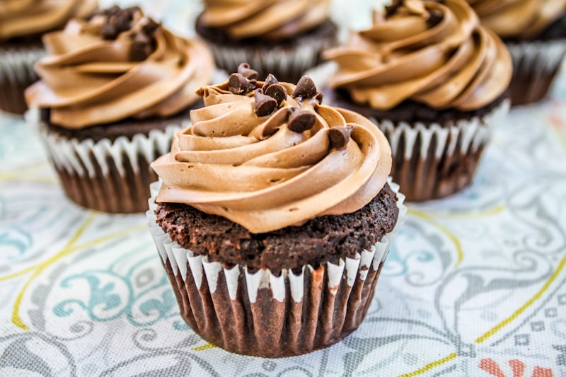
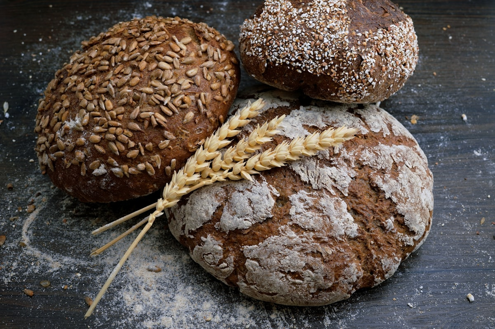
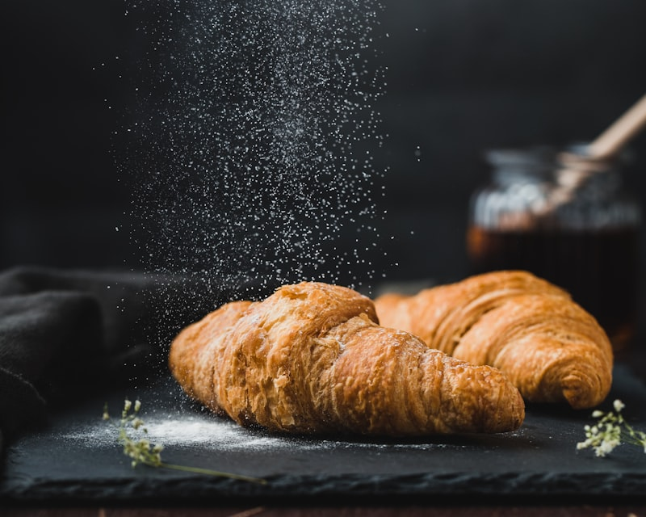
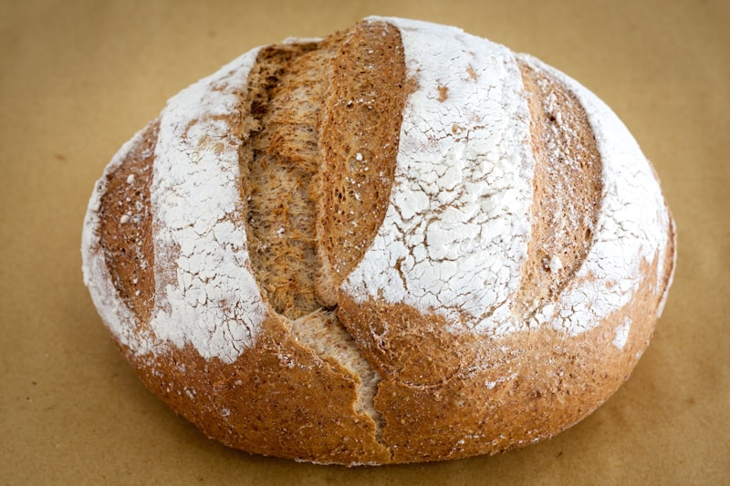
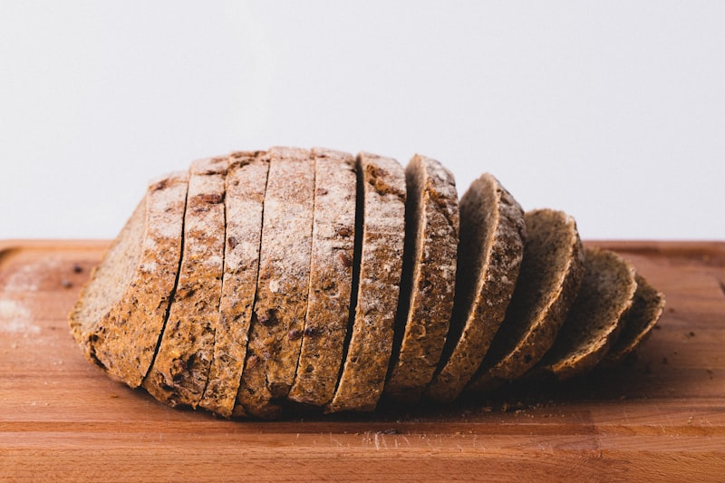
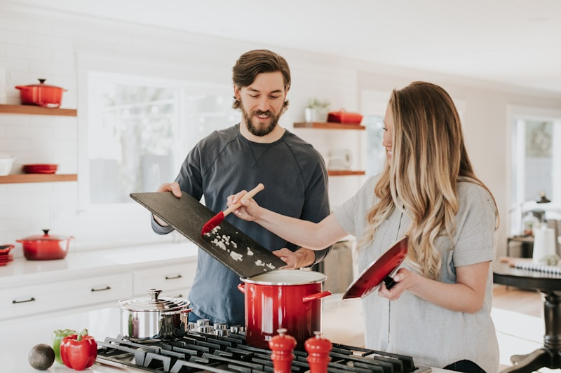

Tartes Signature
Nos tartes revisitent les classiques avec des produits locaux : ananas rôti, mangue passion, ou citron vert combava.
CommanderMicro-boulangerie à Saint-Paul
Découvrez Cassava, micro-boulangerie et table bistronomique à la Réunion, proposant pain au levain naturel, pâtisseries locales et snacking éco-responsable.

Commandez nos pâtisseries créatives élaborées avec des ingrédients locaux et de saison, en collaboration directe avec des producteurs réunionnais.
Chaque pâtisserie est une œuvre d'art comestible, conçue avec passion et créativité. Nous travaillons en étroite collaboration avec des producteurs locaux pour sélectionner les meilleurs fruits, vanille, et épices de l'île.
De la tarte tatin revisitée avec des ananas Victoria au entremets au litchi et vanille bourbon, chaque création raconte une histoire de terroir réunionnais.
Consultez notre catalogue des pâtisseries

Nos tartes revisitent les classiques avec des produits locaux : ananas rôti, mangue passion, ou citron vert combava.
Commander
Croissants, pains au chocolat et autres douceurs feuilletées, préparés avec du beurre local et de la farine de qualité.
Commander
Pour vos événements spéciaux, nous créons des gâteaux personnalisés qui combinent esthétique et saveurs uniques.
CommanderUn pain artisanal au levain naturel, fermenté lentement, avec des farines de qualité et des ingrédients locaux pour un goût authentique et sain.
Chaque jour, nos boulangers pétrissent la pâte à la main, laissent fermenter les pains pendant des heures pour développer les arômes, et les cuisent dans notre four traditionnel.
Menu quotidien inventif, sain et frais avec salades, sandwichs et desserts gourmands, mettant en valeur les petits producteurs et artisans locaux.
Notre cuisine évolue au rythme des saisons et des arrivages du marché. Chaque jour, nous proposons de nouvelles créations qui célèbrent la richesse gastronomique de La Réunion.
Composées et gourmandes
Sur pain artisanal
Cuisine du marché
Maison et gourmands


Plat du jour + dessert + boisson. Une pause gourmande au cœur de Saint-Paul.
Café de spécialité accompagné de nos viennoiseries et pâtisseries maison.

Valérie et Daniel, passionnés de gastronomie, unissent leurs savoir-faire pour créer Cassava, un lieu de partage autour du bien manger à la Réunion.
"Notre rêve était de créer un lieu où le pain retrouve ses lettres de noblesse, où chaque bouchée raconte une histoire de terroir et d'engagement."
Après des années d'expérience dans des maisons réputées à Paris et Lyon, ils ont choisi de revenir aux sources, à La Réunion, pour créer un concept unique alliant boulangerie artisanale et cuisine bistronomique.
Le nom "Cassava" est un hommage au manioc, cette racine cultivée depuis des siècles sur l'île et symbole de résilience et d'authenticité. Comme le manioc, leur approche est ancrée dans la tradition mais tournée vers l'innovation.
Contactez-nous par email ou téléphone, retrouvez-nous à Saint-Paul, et consultez nos horaires d'ouverture pour venir déguster nos produits.
12 Rue du Four
97460 Saint-Paul
La Réunion